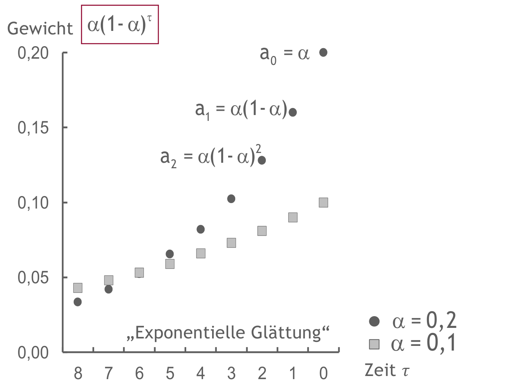

Exponentielle Glättung: Gewichte, Startwert und Rekursion
Operations Management · Kurs 95860 · WiSe 2026/27
Mechanismus: Neues mit bisherigem Niveau verbinden
Die einfache exponentielle Glättung (Simple Exponential Smoothing, SES) aktualisiert eine Niveauprognose: F(t+1) = α × y(t) + (1−α) × F(t) mit 0 < α ≤ 1. Ein Anteil α stammt aus der neuesten Nachfrage, der Rest aus der bisherigen Prognose. Äquivalent ist F(t+1) = F(t) + α × (y(t) − F(t)): Das Modell korrigiert nur einen Teil der jüngsten Abweichung.
Wiederholtes Einsetzen zeigt die Gedächtnisstruktur: Der neueste beobachtete Wert erhält Gewicht α, der vorletzte α(1−α), der davor α(1−α)². Für eine endliche Historie bleibt zusätzlich das Gewicht (1−α)^t auf dem Startwert. Diesen Rest einfach wegzulassen würde die Gewichtssumme verkleinern. Ein Startwert nahe den ersten Beobachtungen begrenzt Anfangsverzerrungen, ist aber keine weitere tatsächlich beobachtete Periode.
Die Gewichtsgrafik macht sichtbar, dass α nicht nur eine frei stehende Rechenkonstante ist: Es verändert die Relevanz jüngerer und älterer Daten.

τ = 0 steht rechts für den neuesten Wert; nach links nimmt das Alter zu. Bei α = 0,2 ist der jüngste Wert stärker gewichtet, alte Werte verlieren aber schneller Einfluss. Kleineres α glättet stärker und reagiert langsamer. SES enthält keine eigene Trend- oder Saisonkomponente; gute Anpassung an ein konstantes Niveau macht es nicht automatisch für jeden Verlauf geeignet.
Originalbeispiel selbst fortschreiben
Im Vorlesungsbeispiel ist α = 0,2 und der fiktive Startwert 134,5. Dieser ist der Mittelwert der ersten vier Nachfragen: (106,8 + 129,2 + 153,0 + 149,1)/4 = 134,525, gerundet 134,5. Der Startwert wird als erste Prognose übernommen. Weil er auch spätere Anfangsbeobachtungen nutzt, ist das ein retrospektiver Initialisierungsfall, kein Beleg für eine damals schon verfügbare Echtzeitprognose. Fehler werden im Beispiel erst ab t = 5 betrachtet.
Für den letzten gezeigten Schritt gilt mit der gerundet gedruckten Vorprognose: F12 = 0,2 × 128,1 + 0,8 × 143,0 = 140,02, angezeigt als 140,0. Ohne Zwischenrundung ab Startwert 134,5 ergibt sich F12 ≈ 140,02464545. Beide Rechenwege ergeben hier 140,02 auf zwei Dezimalstellen bzw. 140,0 auf eine Stelle; die zusätzlichen Nachkommastellen hängen von der Zwischenrundung ab.
Die folgende Tabelle erhält Reihenfolge t = 0 bis 12, Nachfrage-, Prognose-, Fehler- und Quadratspalten. Nachfragewerte und Fehlerbeginn entsprechen dem Original. Anders als die auf eine Stelle gedruckten Folienwerte werden die Felder hier aus der ungerundeten Rekursion berechnet und erst bei Eingabe auf zwei Dezimalstellen gerundet. Einheiten werden als Tabelleneinheiten bezeichnet; die Folie benennt keine physische Mengeneinheit. Fehlerkonvention: ε = Prognose − Nachfrage.
SES: Vorlesungsfolge mit α = 0,2
Runde jedes Endergebnis auf zwei Dezimalstellen. Deutsches Dezimalkomma, z. B. 134,50. Nicht mit gerundeten eigenen Zwischenwerten weiterrechnen; mobil innerhalb der Tabelle scrollen. Ergebnisse sind anfangs leer. Erst selbst rechnen, dann prüfen; i zeigt anschließend den Rechenweg. Eigene Werte werden nicht überschrieben. Änderungen erfordern eine neue Prüfung.
| t | y(t), gegeben | F(t), Tabelleneinheiten | ε(t), Tabelleneinheiten | ε(t)², Tabelleneinheiten² |
|---|---|---|---|---|
| 0 | 134,5 | – | – | – |
| 1 | 106,8 | i RechenwegF1 = Startwert 134,5 = 134.50000000 Tabelleneinheiten; erst das Endergebnis auf zwei Stellen runden. | – | – |
| 2 | 129,2 | i RechenwegF2 = 0,2 × 106.8 + 0,8 × 134.50000000 = 128.96000000 Tabelleneinheiten; erst das Endergebnis auf zwei Stellen runden. | – | – |
| 3 | 153 | i RechenwegF3 = 0,2 × 129.2 + 0,8 × 128.96000000 = 129.00800000 Tabelleneinheiten; erst das Endergebnis auf zwei Stellen runden. | – | – |
| 4 | 149,1 | i RechenwegF4 = 0,2 × 153.0 + 0,8 × 129.00800000 = 133.80640000 Tabelleneinheiten; erst das Endergebnis auf zwei Stellen runden. | – | – |
| 5 | 158,3 | i RechenwegF5 = 0,2 × 149.1 + 0,8 × 133.80640000 = 136.86512000 Tabelleneinheiten; erst das Endergebnis auf zwei Stellen runden. | i Rechenwegε5 = F5 − y5 = 136.86512000 − 158.3 = -21.43488000 Tabelleneinheiten. | i Rechenwegε5² = (-21.43488000)² = 459.45408061 Tabelleneinheiten². Mit ungerundeter Prognose rechnen. |
| 6 | 132,9 | i RechenwegF6 = 0,2 × 158.3 + 0,8 × 136.86512000 = 141.15209600 Tabelleneinheiten; erst das Endergebnis auf zwei Stellen runden. | i Rechenwegε6 = F6 − y6 = 141.15209600 − 132.9 = 8.25209600 Tabelleneinheiten. | i Rechenwegε6² = (8.25209600)² = 68.09708839 Tabelleneinheiten². Mit ungerundeter Prognose rechnen. |
| 7 | 149,8 | i RechenwegF7 = 0,2 × 132.9 + 0,8 × 141.15209600 = 139.50167680 Tabelleneinheiten; erst das Endergebnis auf zwei Stellen runden. | i Rechenwegε7 = F7 − y7 = 139.50167680 − 149.8 = -10.29832320 Tabelleneinheiten. | i Rechenwegε7² = (-10.29832320)² = 106.05546073 Tabelleneinheiten². Mit ungerundeter Prognose rechnen. |
| 8 | 140,3 | i RechenwegF8 = 0,2 × 149.8 + 0,8 × 139.50167680 = 141.56134144 Tabelleneinheiten; erst das Endergebnis auf zwei Stellen runden. | i Rechenwegε8 = F8 − y8 = 141.56134144 − 140.3 = 1.26134144 Tabelleneinheiten. | i Rechenwegε8² = (1.26134144)² = 1.59098223 Tabelleneinheiten². Mit ungerundeter Prognose rechnen. |
| 9 | 138,3 | i RechenwegF9 = 0,2 × 140.3 + 0,8 × 141.56134144 = 141.30907315 Tabelleneinheiten; erst das Endergebnis auf zwei Stellen runden. | i Rechenwegε9 = F9 − y9 = 141.30907315 − 138.3 = 3.00907315 Tabelleneinheiten. | i Rechenwegε9² = (3.00907315)² = 9.05452123 Tabelleneinheiten². Mit ungerundeter Prognose rechnen. |
| 10 | 152,2 | i RechenwegF10 = 0,2 × 138.3 + 0,8 × 141.30907315 = 140.70725852 Tabelleneinheiten; erst das Endergebnis auf zwei Stellen runden. | i Rechenwegε10 = F10 − y10 = 140.70725852 − 152.2 = -11.49274148 Tabelleneinheiten. | i Rechenwegε10² = (-11.49274148)² = 132.08310669 Tabelleneinheiten². Mit ungerundeter Prognose rechnen. |
| 11 | 128,1 | i RechenwegF11 = 0,2 × 152.2 + 0,8 × 140.70725852 = 143.00580682 Tabelleneinheiten; erst das Endergebnis auf zwei Stellen runden. | i Rechenwegε11 = F11 − y11 = 143.00580682 − 128.1 = 14.90580682 Tabelleneinheiten. | i Rechenwegε11² = (14.90580682)² = 222.18307687 Tabelleneinheiten². Mit ungerundeter Prognose rechnen. |
| 12 | noch unbekannt | i RechenwegF12 = 0,2 × 128.1 + 0,8 × 143.00580682 = 140.02464545 Tabelleneinheiten; erst das Endergebnis auf zwei Stellen runden. | – | – |
Verstehen und anwenden
Eigene Übungen, keine offiziellen Vorlesungsaufgaben. Schreibe deinen Versuch vor dem Öffnen der Hilfe auf. Prüfe Rechenweg, Einheiten, Interpretation und Annahmen getrennt. Die Zahlenprüfung der Tabellen ersetzt keine Begründung; offene Antworten werden transparent selbst bewertet, nicht durch Schlüsselwortsuche.
1. Gewichte rekonstruieren
Dein Erstversuch: Erkläre bei α = 0,2 die Gewichte der letzten drei Nachfragen und den Rest auf dem Startwert nach drei Updates.
Optionaler Hinweis
Setze die Rekursion dreimal ein.
Vollständige Musterlösung und Bewertung
Die drei Beobachtungsgewichte von neu nach alt sind 0,2; 0,16; 0,128. Das Startgewicht beträgt 0,8³ = 0,512. Summe 1. Ohne den Startrest ergäbe sich nur 0,488; der Anfangszustand ist noch nicht verschwunden.
Bewertung: Beobachtungsgewichte, Startgewicht, Summe und Bedeutung je 1 Punkt (4).
2. Einen neuen Fall berechnen
Dein Erstversuch: Eigener Fall: F1 = 100 Stück, α = 0,25; y1 = 140 und y2 = 120 Stück. Berechne F2, F3 und die beiden vorab entstandenen Fehler ε1 und ε2.
Optionaler Hinweis
F2 entsteht nach y1, aber ε2 vergleicht F2 mit y2.
Vollständige Musterlösung und Bewertung
F2 = 0,25 × 140 + 0,75 × 100 = 110 Stück. F3 = 0,25 × 120 + 0,75 × 110 = 112,5 Stück. ε1 = 100 − 140 = −40 Stück, ε2 = 110 − 120 = −10 Stück. F3 wird nicht mit y2 zur Fehlerbeurteilung von Periode 2 verwendet: Das wäre bereits aktualisiertes Wissen.
Bewertung: F2, F3, beide Fehler zusammen, Einheiten und korrekte Zeitzuordnung je 1 Punkt (5).
3. Zwei Irrtümer korrigieren
Dein Erstversuch: „α = 0,2 bedeutet, dass exakt die letzten fünf Werte gleich gewichtet werden. Ein Startwert aus den ersten vier Nachfragen ist schon vor der ersten Nachfrage verfügbar.“ Prüfe beides.
Optionaler Hinweis
1/α ist kein hartes Fenster; Initialisierung hat einen Informationszeitpunkt.
Vollständige Musterlösung und Bewertung
SES hat exponentiell sinkende Gewichte und keinen festen Abbruch nach fünf Werten. Ein Mittelwert aus vier Nachfragen setzt deren Beobachtung voraus. Für ein retrospektives Lehrbeispiel ist diese Initialisierung möglich; als echte Vorabprognose für die erste Periode wäre sie Datenleckage. Eine Echtzeitanwendung braucht einen vorher verfügbaren Startwert oder eine ausgewiesene Anlaufphase.
Bewertung: Keine Gleichgewichtung, kein harter Abbruch, Verfügbarkeit und geeignete Initialisierungsalternative je 1 Punkt (4).
4. Transfer: schneller reagieren, mehr schwanken
Dein Erstversuch: Nutze F1 = 100, y1 = 140, y2 = 120 nun mit α = 0,75. Vergleiche F2/F3 und Fehler mit Aufgabe 2. Ergibt sich in diesen zwei Perioden eine kleinere Fehlerquadratsumme? Würde ein solcher Vorteil allgemeine Überlegenheit beweisen?
Optionaler Hinweis
Vergleiche die Fehler derselben Perioden, nicht nur die aktuellste Prognose.
Vollständige Musterlösung und Bewertung
F2 = 130, F3 = 122,5 Stück. ε1 = −40, ε2 = +10. Beide α liefern auf Perioden 1 und 2 SSE = 1.600 + 100 = 1.700 Stück², also MSE = 850 Stück². Die größere Reaktion wechselt hier von Unter- zu Überschätzung; sie verbessert diesen MSE nicht. F3 kann erst nach y3 bewertet werden. Zwei Beobachtungen belegen keine generelle Parameterüberlegenheit.
Bewertung: F2/F3 zusammen 1 Punkt; Fehler, gemeinsamer MSE, fehlende y3-Bewertung, Generalisierungsgrenze je 1 (5).
Fehlerreflexion und verzögerte Wiederholung
Maximal 18 selbst bewertete Punkte (4 + 5 + 4 + 5). Vergib Begründungspunkte nur für den erklärten Mechanismus; fachlich gleichwertige Formulierungen zählen. Notiere einen Fehler im Erstversuch, seine Ursache und eine Kontrollfrage. Morgen: Erkläre den Mechanismus und löse Aufgabe 2 ohne Vorlage. In einer Woche: Rechne Aufgabe 2 mit α = 0,5 und erkläre, warum ein Vergleich erst nach denselben beobachteten Perioden sinnvoll ist. Sage die Wirkung zuerst voraus, rechne dann und erkläre die Grenze des Ergebnisses.
Selbstcheck (MC)
Begründung anzeigen
a und c sind richtig: Der Startrest und der Informationszeitpunkt gehören zur Rekursion. b ist falsch: Gewichte fallen exponentiell; es gibt kein solches gleich gewichtetes Fenster.
Verwandte Lernseiten
Quellen und Abgrenzung
02 Nachfrageprognose OM26 – aktuelle Learnweb-Fassung (Hochschulzugang), Prof. Dr.-Ing. Bernd Hellingrath, WiSe 2026/27. Verwendet wird die aktuelle Datei mit SHA256 226d3787030c47170aae3ccf707eaf92f2d9246ec02e1da3b13c31256f5704aa. Physische PDF-Seiten, nicht die abweichenden gedruckten Foliennummern. Gelesen am 28.10.2026; Original und Extrakt bleiben privat.
- Rekursion, Gewichte und Startrest → physische PDF-S. 35–41 (gedruckt 39–45), Einsatzgrenzen zusätzlich S. 62.
- Gewichtsgrafik → gezielter geprüfter Ausschnitt aus physischer PDF-S. 37 (gedruckt 41); Achsen, Formel und beide Legenden erhalten, keine ganze Folie veröffentlicht.
- Originalbeispiel und Rechentabelle → physische PDF-S. 42 (gedruckt 46), Originalansicht geprüft. Zahlenfolge und Spaltenordnung erhalten, Feldprüfung und ungerundete Zweistellenrechnung sind didaktische Ergänzungen. Startwertmittel 134,525 und Unterschied zu 134,5 ausdrücklich ausgewiesen.
- Verständnisaufgaben, Zeitzuordnung und Initialisierungsgrenze → eigene Rechnungen und didaktische Ableitungen; keine offiziellen Musterlösungen.
Alle Aufgaben, Hinweise, Musterlösungen, Bewertungskriterien und Wiederholungsvarianten sind eigene didaktische Ergänzungen, keine offiziellen Prüfungsaufgaben. Eigene Zahlenfälle sind keine empirischen Befunde.